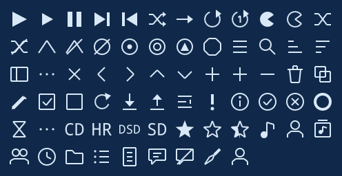
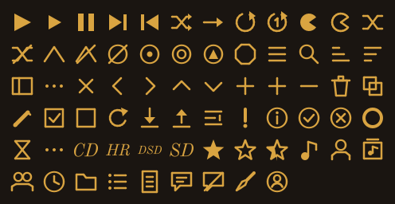
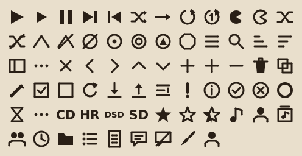
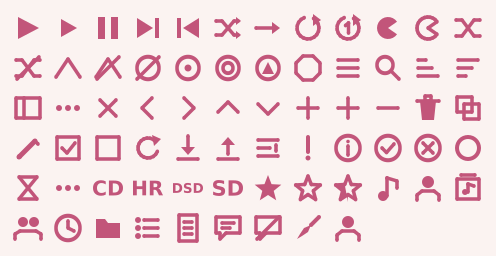
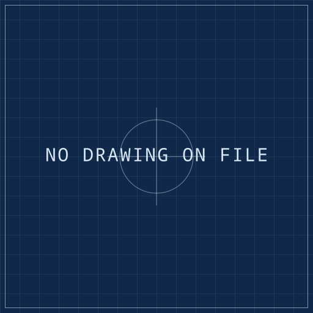
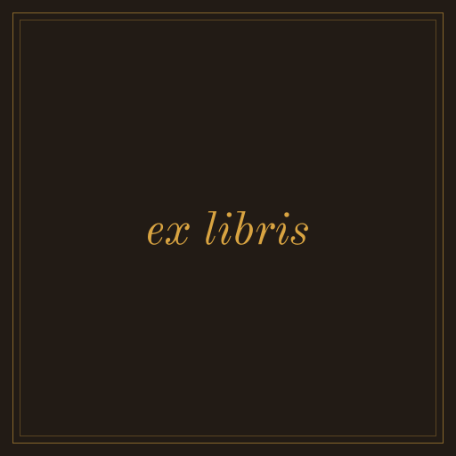
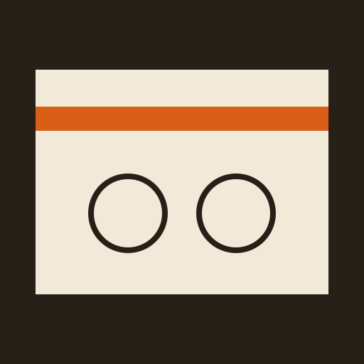

One CSS file. That is the whole of it.
Drop a file into ~/.config/flaclify/themes/. The directory is watched, so the theme appears under Custom and every save re-applies it while the app runs. The full guideline, with the selector table, is docs/THEMING.md. What follows is the part you must not skip.
Anatomy.
/* @name: Midnight
* @scheme: dark
* @auto-accent: off
* @art-background: off
* @icons: terminal
*/
:root {
--window-bg-color: #101418;
--window-fg-color: #e6edf3;
--accent-bg-color: #6fb3ff;
--accent-fg-color: #08111c;
}
window { font-family: "Inter", sans-serif; }
button { border-radius: 0; }
| Key | Values | Does |
|---|---|---|
@name | text | Menu label. Defaults to the file stem. |
@scheme | light · dark · follow | Forces the colour scheme. Set it whenever the palette is hard-coded. |
@auto-accent | off · on | off keeps album art and the system accent from overriding yours. |
@art-background | off · on | off hides the blurred album-art wash without touching the user's setting. |
@icons | set name | A bundled icon set, searched before the stock icons; also supplies the placeholder plate. |
A theme may build on a bundled one — @import url("resource:///io/github/h3303/Flaclify/themes/broadsheet.css"); — and override only what differs. That is how Reversed Spine is made.
Rules of the hand.
Icons and plates.
Each theme names an icon set with @icons, searched ahead of the stock icons while it is active — so a theme differs in concept, not only in weight. Every set is generated from one geometry spec per icon by tools/gen_icons.py, rendered as fill-only paths so GTK's symbolic recolouring always applies. Each ships a 512-pixel album-art plate in its own idiom.










